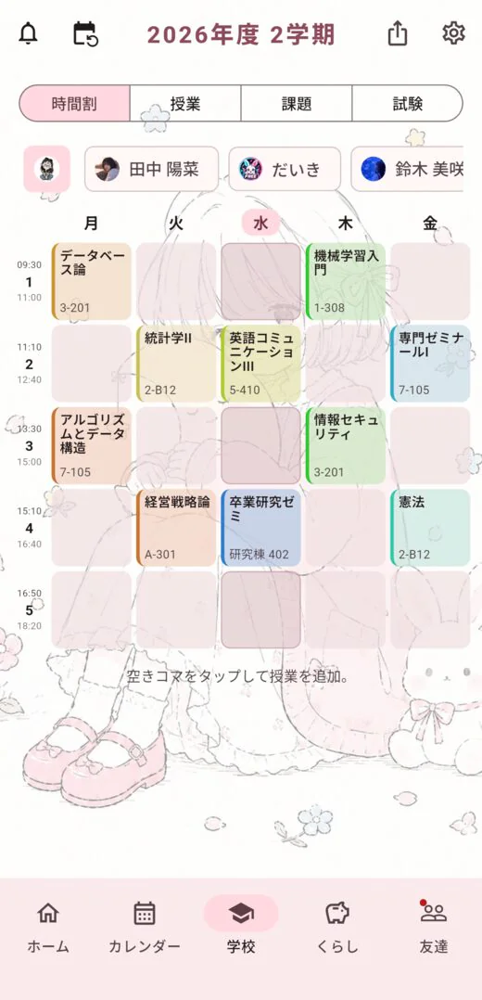
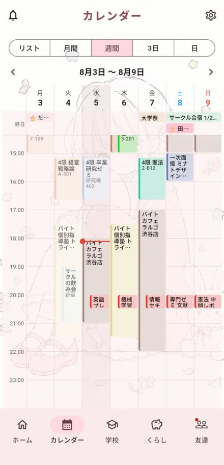
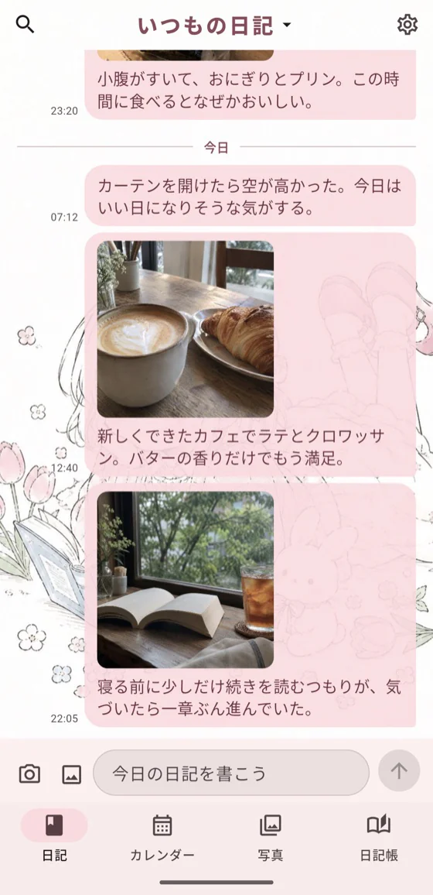
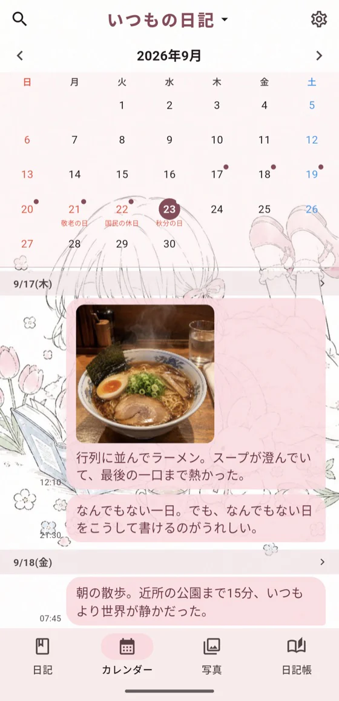
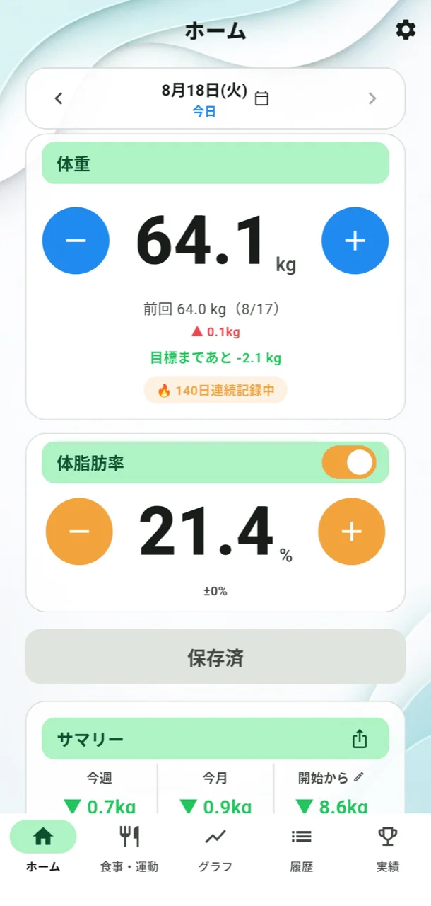
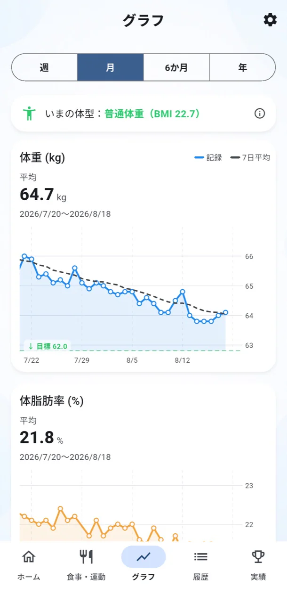

時間割から日記まで
学生生活の予定や毎日の記録に使えるmisoclubのアプリ。
MIO
授業もバイトも
ひとつの予定表に
時間割や課題をまとめて管理。テーマを選んで自分の好みに。
詳しく見る


秒速日記
思いついたことを
すぐ日記に
SNSに書く感覚で日記を残せます。写真や気持ちも一緒に。
詳しく見る


きょうの体重
毎日の記録を
数タップで
体重を記録してグラフで変化を確認。7日平均で日ごとの上下も見渡せます。
詳しく見る


お知らせ
-
RELEASE
秒速日記をリリースしました。
-
WEB
misoclubのウェブサイトをリニューアルしました。
-
RELEASE
MIOをiOS / Androidでリリースしました。
-
RELEASE
夜会計ナビをiOS / Androidでリリースしました。
-
RELEASE
きょうの体重をiOS / Androidでリリースしました。
-
RELEASE
キネンカをiOS / Androidでリリースしました。
-
RELEASE
日本旅日記をiOS / Androidでリリースしました。